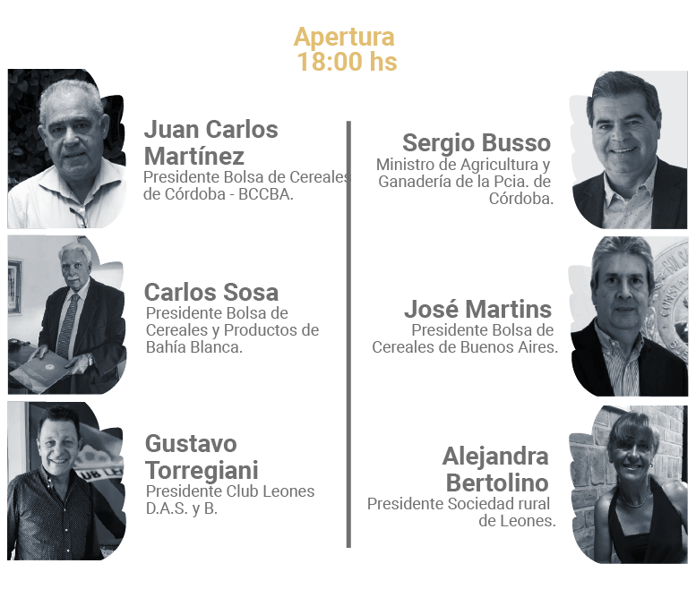

Sponsors Oficiales

Organizan e invitan

Sponsors Oficiales Fiesta Nacional del Trigo

Partners

REVIVÍ EL EVENTO
Jueves 11 Febrero
Apertura PreCongreso (Día 1)
"El mercado brasileño de trigo en 2021" - Rubens Barbosa
"Situación global del trigo" - Eduardo Vázquez
"Consumidores pospandémicos escenarios y perspectivas" - Anna Lanzani
Viernes 12 Febrero
Apertura PreCongreso (Día 2)
"Monitoreo de calidad de trigo" - Luis Bonvehi / Leticia Mir
"Trigo en la Unión Europea, Situación y perspectivas" - Bernard Valluis
"Fiesta Nacional Del Trigo"
Jueves 11 Febrero
Viernes 12 Febrero


Sábado 13 de febrero


La Fiesta Nacional del Trigo es una de las festividades más antiguas del país. Este mega evento que se realiza cada año desde 1947 es una oportunidad de festejo para toda la familia donde el trigo es protagonista.
Organizada en la localidad de Leones, Capital Nacional del Trigo.
Este encuentro luego se declaró Fiesta Nacional en 1956 y constituye una de las conmemoraciones más tradicionales a los productores de este reconocido cereal.

En cada edición, ofrece un marco propicio para desarrollar jornadas trigueras nacionales y jornadas técnicas. A su vez, se realizan concursos nacionales de muestras de trigo y el clásico desfile de carrozas, alegorías y maquinarias.

Por su parte, este evento incluye la elección y coronación de la Reina Nacional del Trigo. Además, sobre sus escenarios se despliegan shows musicales y espectáculos artísticos durante las diversas jornadas.

RECOMENDACIONES PARA EL STREAMING
Chequear que la conexión a internet sea estable.

Asegúrate que tus dispositivos estén cargados.

Busca un sitio comodo.

Prepárate para aprender y disfrutar.
 Fiesta Nacional del Trigo
Fiesta Nacional del Trigo
 +54 9 3472 43-7935
+54 9 3472 43-7935
 @CongresoTrigAR
@CongresoTrigAR
 info@trigar.com.ar
info@trigar.com.ar